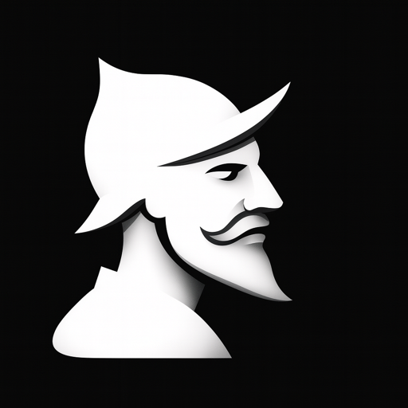

The portrait's halftone-dither works because it stays pure B&W. Place on near-black or near-white only.
Marketing-site only. Low-fps (12fps), desaturated, never competes with content. Respect prefers-reduced-motion.
No blue tint, no duotone, no "brand-coloring" the portrait. The dither palette is strictly grey.
The dither pattern disintegrates under 20px. Swap to the solid icon.png mark for favicons.